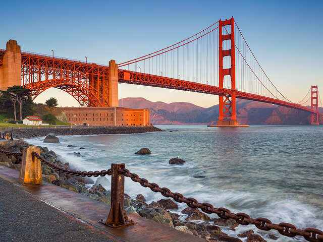

My Trips Through United States of America
Posted 23/02/2020 by Aditya Singh
Over the next few months, I hope that my posts here on the blog will provide you with valuable travel information and inspiration so that when the time comes to travel again, you’ll be all set to go. But for the foreseeable future, travel will look a lot different for all of us. For me, it means sticking to destinations closer to home and spending a lot of time reveling in and exploring the outdoors. Today’s post is going to focus on a destination right at the top of the great outdoors bucket list, the Grand Canyon.
When Hotels.com reached out to me and asked if I’d like to share my thoughts on visiting the Grand Canyon, I was eager to write about this absolutely gorgeous natural wonder, where you can enjoy spectacular views, challenge yourself on hiking trails, cycle along the rim, and learn about the history of the area, all while physical distancing.
I’ve visited the Grand Canyon a couple of times and it always manages to impress with its steep canyon walls and vivid layers of reddish, sepia, and even purple-hued rock. Stretching 277 miles (446 km) long and up to 18 miles (29 km) wide, there is plenty of room to explore this vast and beautiful place, and there are quite a lot of things to see and do.
Before I get into the many memorable ways that you can visit the Grand Canyon, I wanted to touch on some important information such as where to stay, what time of year you should plan your visit and a note on visiting during the COVID-19 pandemic.

Central Park is New York’s largest and best known park, located In the midst of Midtown and stretching nearly 2.5 miles in length. Inhabitants of Manhattan use the park as their personal garden, and with its many twists and turns, there are numerous hidden spots, perfect for a little R and R. My favourite is the hidden waterfalls; enter the west-side of the park at 102nd Street and follow the signs for ‘the Lock’.
Bryant Park is not exactly the most peaceful location, smack bang in the centre of Midtown Manhattan. However, there’s peace to be found in this small city patch of green. Grab a healthy treat from Whole Foods and enjoy an afternoon on the grass. Unwind during the summer months with one of the many free holistic activities taking place such as yoga, Tai Chi, fencing or chess.

San Francisco is one of the most eclectic cities in the United States. It’s home to liberals, hippies, hipsters, techies, immigrants, yuppies, one of the oldest gay scenes in the States, that big red bridge, Alcatraz, delicious Chinese food, seafood, well, food in general (this is a great city to be hungry in), and so much more. It’s a magical place and one of my favorite places to visit since there is so much to see and do. While it lacks that certain je ne sais quoi that would convince me to pack my bags and live there, I look forward to each visit with excitement (and hunger). There’s always something new and exciting going on in SF.
Yet, I remember my first time visiting San Francisco. I only had three full days to see everything, and that just wasn’t enough. It was overwhelming. Going back a few times has allowed me to see everything but what happens when you don’t know when you are going to visit SF again? What to do in San Francisco? What do you see in SF? San Francisco’s attractions are spread out and aren’t always convenient to reach — there’s a lot of travel time involved thanks to lots of traffic and a limited subway system. So here is my post on how to make the most of your time in San Francisco and how to see and explore the city in just three days (or less)! This post will help you figure out what to see during your visit!